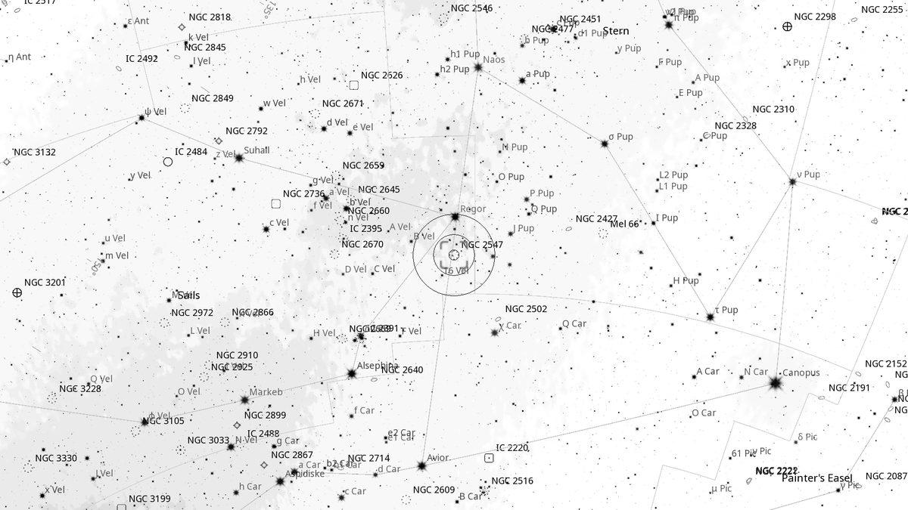
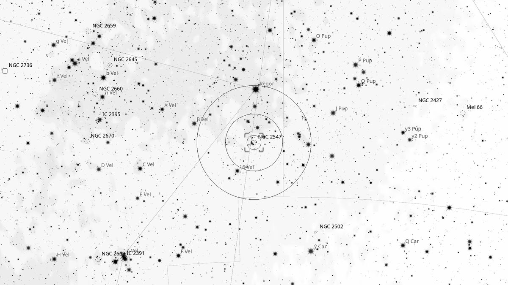
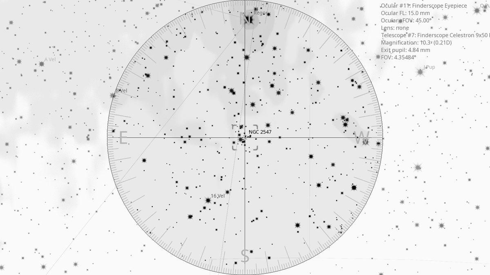
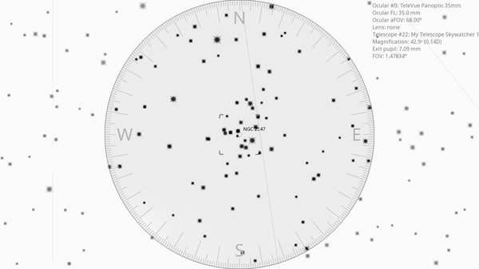

NGC 2547 (OC)
| R.A. | Dec. | Size | Mag | SB | Cnt.St | Type | Distance | Chart |
|---|---|---|---|---|---|---|---|---|
| 08h 09m 54.6s | -49° 12′ 36.9″ | 15.0′ | 4.7 | 10.3 | I3rn | OC | -- | -- |

Background
NGC 2547 is a young open cluster ( 80 million years) about 1,500 light-years away. Found near γ Velorum, itself one of the most interesting double stars in the southern sky — a 4th-magnitude binary whose primary is the brightest Wolf-Rayet star visible from Earth.
My Observing Notes
44-cm (Club 17.5-inch f/5): Start from the “False Cross” to find γ Velorum. γ Velorum itself is worth a look — a double with components 43 arcsec apart, the brighter a Wolf-Rayet star and the closest of its kind to Earth. Two bright stars beneath point to the double pair, completing the view. Using γ Vel as a finderscope marker, drift south 1° and pick up a bright knot of stars: NGC 2547 itself. About 25 arc-min wide and relatively sparse; two overlapping oval chains of stars form the bulk of the cluster.(10 April 2026)
References
Charts



